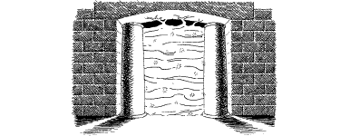

192
Intuition prompts you to take out the Onyx Key from your pocket and try it in the hole. It fits perfectly and, when you twist it clockwise, the entire portal begins to shimmer and lose its solidity. It becomes transparent before fading completely, as if evaporating into thin air. You go to retrieve the Onyx Key but it, too, has disappeared (erase this Special Item from your Action Chart).
{kind=link}

Relieved that you have overcome this obstacle, you step through the now-open archway and into an adjoining hall. This vaulted, oblong-shaped hall is illuminated by flickerings of electrical fire which arc between two freestanding pillars at the far end of the chamber. Beyond the pillars you can make out the shadowy entrance to another chamber; it is the only other exit from this hall. You realize at once that to pass between the pillars could prove to be fatal: the power arcing between them is as great as any lightning storm raging in the skies above Xaagon. Yet there may be a way of avoiding contact with this raw power. You notice that the two freestanding pillars do not go all the way to the ceiling—there is a gap, a little over two feet wide above them.
If you possess Kai-alchemy and wish to use it, turn to 136.
If you wish to attempt to climb one of the pillars and squeeze through the gap in order to reach the adjoining hall, turn to 297.
If you decide to throw caution to the wind and run between the pillars, turn to 211.